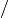
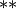
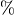

Introducción a Python¶
Python puede utilizarse como un programa ejecutable desde una terminal de comandos o de manera interactiva mediante una consola de Python. Python incorpora una consola por defecto, pero existen otras con características útiles para el análisis científico de datos. ipython es una consola de Python mejorada, incluyendo completado de funciones y variables, funcionalidad de los comandos básicos de la consola del sistema (cd, ls, pwd, etc.), comandos adicionales (llamados comandos mágicos) y un largo etc.; es la consola de Python que usaremos para este curso.
Empezando con Python¶
Para inicial la consola IPython sólo hay que escribir ipython (o python para la consola estándar),en la terminal de comandos de Linux y Mac o ejecutar el programa desde el menú de Windows:
>>> print('Hola, esto es Python')
>>> Hola, esto es Python
Para obtener ayuda sobre un comando basta escribir el comando seguido de ”?”:
>>> help(print)
Type:
builtin_function_or_method
Base Class:
<type ’builtin_function_or_method’>
String Form:
<built-in function print>
Namespace:
Python builtin
Docstring:
print(value, ..., sep=’ ’, end=’\n’, file=sys.stdout)
Prints the values to a stream, or to sys.stdout by default.
Optional keyword arguments:
file: a file-like object (stream); defaults to the current sys.stdout.
sep: string inserted between values, default a space.
end: string appended after the last value, default a newline.
Si trabajamos con la consola avanzada ipython, podemos hacer lo mismo escribiendo el comando con un símbolo de interrogación al final, por ejemplo: print?.
Nota
Cuando trabajamos con la terminal, puede ser muy útil guardar todo lo que vamos haciendo para usarlo porteriormente o continuar donde estábamos. Al iniciar ipython, se puede empezar grabar la sesión con el comando %logstart, por ejemplo:
%logstart -o registro_3_octubre_2009.txt
donde el parámetro opcional -o guarda también la salida a modo de comentario en el fichero registro_3_octubre_2010.txt. Al iniciar ipython en otro ocasión, podemos hacer que antes lea ese fichero de sesión escribiendo:
ipython -lp registro_3_octubre_2010.txt
para recuperar todo casi como lo teníamos, en medida de lo posible.
Tipos básicos de datos¶
En cualquier lenguaje de programación existen distintos tipos de datos, que podemos almacenar y operar de forma diferente y que poseen distintas propiedades. Los más comunes son las cadenas de texto o string, indicadas siempre entre comillas y los números.:
>>> print("Esta es una linea de texto")
>>> Esta es una linea de texto
>>> print(28)
>>> 28
La variables son un componente fundamental de un lenguaje de programación y no son más que un nombre que se refiere a un registro que contiene uno o varios datos, que puede ser de distinto tipo:
>>> frase = "Esta es una linea de texto"
>>> num = 22
>>> num*2
>>> 44
>>> frase*2
>>> 'Esta es una linea de textoEsta es una linea de texto'
Nótese que la cadena de texto “frase” fué duplicada al multiplicarla por dos. Con el comando type() de Python podemos saber el tipo de dato que es una variable:
>>> type(frase)
>>> <type 'str'>
>>> type(num)
>>> <type 'int'>
Las variables pueden ser cualquier combinación de letras y números (siempre que no empiece por número) y pero no están permitidos caracteres especiales como tildes, puntos, espacios en blanco, etc. Algunas palabras están además reservadas ya por el propio Python, como def, class, return, etc. por lo que tampoco se pueden usar como variables.
Nótese que num es un entero int estricto y el cálculo entre números enteros siempre da como resultado otro número entero, redondeándose al más cercano en caso de no ser entero exacto:
>>> 113/27
>>> 4 # en lugar de 4.18
Si queremos usar números de coma flotante, debe emplearse directamente un valor decimal (float) en estos casos:
>>> 113.0/27.0
>>> 4.1851851851851851
>>> type(113.0/27.0)
>>> <type 'float'>
Python emplea número de 64 bits por defecto en los float. En cualquier operación es muy importante usar los enteros y float correctamente y tener cuidado al mezclarlos, de otro modo se obtendrá un resultado no deseado o equivocado.
Los tipos de datos pueden ser convertidos de unos otros mientras sea posible, empleando str() para convertir a texto, int() a entero y float() a float:
>>> float(3)
>>> 3.0
>>> int(3.1416)
>>> 3
>>> str(34)
>>> '34'
Para el caso de los float, se pueden redondear con round(), que redondea al entero más próximo. La funciones ceil() y floor() del paquete math redondean hacia arriba y hacia abajo respectivamente:
>>> print(round(4.4)) , (round(4.5))
>>> 4.0 5.0
>>> # Importo todas las funciones matemáticas del módulo math
>>> from math import *
>>> print(ceil(4.4)) , (ceil(4.5))
>>> 5.0 5.0
>>> print(floor(4.4)) , (floor(4.5))
>>> 4.0 4.0
Más adelante veremos qué son los módulos, que ofrecen nuevas funciones y cómo usarlos.
Operadores aritméticos¶
Con Python se pueden hacer las operaciones aritméticas habituales usando los símbolos correspondientes:
| Operación | Símbolo |
|---|---|
| Suma |  |
| Resta |  |
| Multiplicación | |
| División |  |
| Exponenciación |  |
| Residuo o resto |  |
La prioridad en la ejecución (de mayor a menor, separados por ;) es la siguiente:  ;
;  , /, %; +, - .
, /, %; +, - .
Operadores lógicos¶
Estos operadores permiten comparar valores entre sí:
| Operacion | Simbolo |
|---|---|
| Igualdad (comparación) | == |
| Mayor/Menor | >, < |
| Mayor o igual/Menor o igual | >=, =< |
| and or | y, o |
| true false | cierto, falso |
Veamos algunos ejemplos:
>>> 8 > 5
>>> True
>>> (4 > 8) or (3 > 2)
>>> True
>>> True and False
>>> False
>>> (4 > 8) and (3 > 2)
>>> False
Cadenas de texto¶
Las cadenas de texto (llamdas string) no son mas que texto formado por letras y números de cualquier longitud y son fácilmente manipulables. Cada caracter de una cadena de texto tiene asociado un índice que indica su posición en la cadena, siendo 0 el de la izquierda de todo, 1 el siguiente, etc. hasta el último:
>>> frase = "Burocracia, su lechuguita" # Variable "frase" que contiene una cadena de texto
>>> print(frase[0]) # Primera letra de la cadena
>>> B
>>> print(frase[4]) # Quinta letra, con índice 4
>>> c
>>> len(frase) # Longitud de la cadena de texto, incluyendo espacios en blanco
>>> 25
>>> print(frase[3:10]) # Imprime de cuarto caracter (índice 3) al decimo (indice 9)
>>> ocracia
>>> print(frase[3:]) # Imprime desde el cuarto caracter hasta el final
>>> ocracia, su lechuguita
>>> print(frase[:6]) # Imprime del inicio a sexto caracter (índice 5)
>>> Burocr
También se pueden referir con índices contando desde la derecha, usando índices negativos, siendo -1 el primero por la derecha:
>>> print(frase[-1]) # El último caracter, contando desde la derecha
>>> a
>>> print(frase[len(frase)-1]) # El último caracter, contando desde la izquierda
>>> a
>>> print( frase[-1] == frase[len(frase)-1] ) # Compruebo si son iguales
>>> True
Recuerda que los índices y en general cualquier lista de números se empieza siempre con 0, por lo que el primer elemento de una lista es frase[0] y no frase[1]. Al escribir frase[10] estamos tomando el elemento 11 no el 10.
Existen varios métodos o funciones específicas para tratar y manipular candenas de texto. Veamos algunos:
>>> frase.split() # Separa la cadena por espacios a una lista
>>> ['Burocracia,', 'su', 'lechuguita']
>>> frase_mayusculas = frase.upper() # Cambia a mayusculas y lo guardo en la variable frase_mayusculas
>>> print(frase_mayusculas)
>>> BUROCRACIA, SU LECHUGUITA
>>> frase_minusculas = frase.lower() # Cambia a minúculas y lo guardo en la variable frase_minusculas
>>> print(frase_mayusculas)
>>> burocracia, su lechuguita
>>> frase.replace('lechuguita', 'bocata') # Reemplaza una cadena de texto por otra
>>> 'Burocracia, su bocata'
Impresión de texto y de números¶
La cadenas de texto se pueden concatenar o unir con +:
>>> "Esta es un frase" + " y esta es otra"
>>> 'Esta es un frase y esta es otra'
Sin embargo, la concatenación sólo es posible para texto (string), por lo que no se pueden concatenar letras y números. Una posibilidad es convertir los números a string:
>>> a, b = 10, 10**2 # Defino dos numeros, a=10 y b=10**2
>>>
>>> print(str(a) + " elevado al cuadrado es " + str(b))
>>> 10 elevado al cuadrado es 100
Una manera más práctica y correcta de hacer esto es usando el formateo de números:
>>> # Imprimo el resultado con 50 decimales
>>> print("%.50f") % log10(2.**100)
>>> 30.10299956639811824743446777574717998504638671875000
>>> print("El %s de %d es %f.") % ('cubo', 10, 10.**3)
>>> El cubo de 10 es 1000.000000.
Aqui se reemplaza cada símbolo %s (para cadenas de texto), %d (para enteros) o %f (para floats) sucesivamente con los valores después de % que están entre paréntesis. En caso de los floats se puede utilizar el formato %10.5f, que significa imprimir 10 caracteres en total, incluído el punto, usando 5 decimales. Se puede escribir también floats en formato científico utilizando %e, por ejemplo:
>>> print("%.5e" % 0.0003567)
>>> 3.56700e-04
Estructuras de datos¶
Los datos se pueden almacenar en variables univaluadas como hemos visto. También pueden almacenarse en variables estructuradas que contienen uno o más datos. Los tipos de datos estructurados que ofrece Python son las listas, tuplas y diccionarios y se definen de la siguiente forma:
Listas¶
Se trata de un conjunto de números, cadenas de texto u otras listas, ordenadas de alguna manera:
>>> alumnos = ['Miguel', 'Maria', 'Luisma', 'Fran', 'Luisa', 'Ruyman'] # Lista de datos *string*
>>> edades = [14, 29, 19, 12, 37, 15, 42] # Lista de enteros
>>> datos = [24, "Juan Carlos", [6.7, 3.6, 5.9]] # lista de datos mixto
Nótese en el último ejemplo que es posible mezclar varios tipos tipos de datos, como enteros, strings y hasta otras lista. Se puede utilizar la función len() para ver el número de elementos de una lista:
>>> len(alumnos)
>>> 6
Existen varias formas de añadir nuevos elementos a una lista existente:
>>> alumnos.append('Iballa') # Añade "Iballa" al final de la lista
>>> alumnos.insert(3, 'Jairo') # Añade "Jairo" en la posición 3
Es posible ordenar lista con el método sort():
>>> alumnos.sort()
Para extraer un elemento de la lista podemos usar los métodos pop() y remove():
>>> alumnos.pop(2) # Elimino el elemento número 2
>>> 'Jairo'
>>> alumnos.remove('Maria') # Elimino el elemento "Maria" (primera ocurrencia)
La listas se manipulan de manera similar a las cadenas de texto, utilizando índices que indican la posición de cada elemento siendo 0 el primer elemento de la lista y -1 el último:
>>> alumnos[2:6]
>>> ['Luisma', 'Fran', 'Luisa', 'Ruyman']
>>> print(alumnos[0], alumnos[-1])
>>> ('Miguel', 'Ruyman')
Una función muy útil es la función range(), que permite crear una lista de números enteros. Por ejemplo, para crear un lista de 10 elementos, de 0 a 9 podemos hacer esto:
>>> print( range(10) )
>>> [0, 1, 2, 3, 4, 5, 6, 7, 8, 9]
Se puede indicar crear una serie de números indicando el inicio, final y el intervalo entre dos consecutivos. Por ejemplo, para crear una lista con números de 100 a 200 a intervalos de 20 haríamos:
>>> print( range(100,200,20) )
>>> [100, 120, 140, 160, 180]
Nótese que el último número, 200, no se incluye la lista. La función range() se emplea para generar listas de números enteros solamente. Más adelante veremos cómo crear listas similares de floats.
Tuplas: listas inalterables¶
Las tuplas son listas que no se pueden modificar o alterar y se definen enumerando sus elementos entre paréntesis en lugar de corchetes:
>>> # Un tupla de (lista no cambiable) de alumnos
>>> lista_alumnos = ('Miguel', 'Maria', 'Luisma', 'Fran', 'Luisa', 'Ruyman')
Si definimos una variable con varios valores separados por comas, Python interpreta esto como una tupla aunque no esté entre paréntesis:
>>> # Defino dos variables distintas a y b
>>> a, b = 1, 3
>>> print(a)
>>> 1
>>> print(b)
>>> 3
>>> # Defino una variable con dos valores separados por comas, que se interpreta como una tupla
>>> c = 1, 3
>>> print(c)
>>> (1, 3)
En el ejemplo anterior definimos al principio dos variables, a y b, pero al hacer luego c = 1, 3 lo que estamos haciendo es crear una tupla con esos dos elementos. Podemos comprobarlo viendo el tipo de dato del que se trata:
>>> type(c)
>>> <type 'tuple'>
>>> print(c[0]) # imprimo el primer elemento de la tupla
>>> 1
>>> print(c[1]) # imprimo el segundo elemento de la tupla
>>> 3
Diccionarios¶
Los diccionarios son listas en las que cada elemento se identifica con un nombre, por lo que siempre se usan en parejas clave-valor separado por ”:”. La clave va primero y siempre entre comillas y luego su valor, que puede ser en principio cualquier tipo de dato de Python; cada pareja clave-valor se separa por comas y todo se encierra entre llaves. Por ejemplo, podemos crear un diccionario con los datos básicos de una persona:
>>> datos = {'Nombre': 'Juan', 'Apellido': 'Martinez', 'Edad': 21, 'Altura': 1.67}
>>> type(datos)
>>> <type 'dict'>
En este caso hemos creado una clave “Nombre” con valor “Juan”, otra clave “Apellido” con valor “Martínez”, etc. Al crear los datos con esta estructura, podemos acceder a los valores de las claves fácilmente:
>>> print( datos['Nombre'] )
>>> Juan
También podemos conocer todas las claves y los valores de un diccionario usando los métodos keys() y values() respectivamente:
>>> datos.keys()
>>> ['Apellidos', 'Nombre', 'Altura']
>>> datos.values()
>>> ['Martinez', 'Juan', 1.6699999999999999]
Módulos y paquetes de Python¶
Python viene con muchos módulos que ofrecen funcionalidades adicionales muy interesantes. Uno de ellos es el paquete de funciones matemáticas básicas math. Se puede importar un paquete haciéndolo implícitamente, osea importando el paquete en sí o bien una, varias o todas sus funciones:
>>> import math # importa el paquete math
>>> import math as M # importa el paquete math llamándolo M
>>> from math import sin, cos, pi # importa las funciones sin, cos y pi de math
>>> from math import * # importa todas las funciones de math
Podemos ver un listado de las funciones que ofrece un módulo usando la función dir():
>>> import math
>>> dir(math) # Lista todas las funciones y subpaquete del modulo math
['__doc__', '__name__', '__package__', 'acos', 'acosh', 'asin', 'asinh', 'atan', 'atan2', 'atanh', 'ceil', 'copysign', 'cos', 'cosh', 'degrees', 'e', 'exp', 'fabs', 'factorial', 'floor', 'fmod', 'frexp', 'fsum', 'hypot', 'isinf', 'isnan', 'ldexp', 'log', 'log10', 'log1p', 'modf', 'pi', 'pow', 'radians', 'sin', 'sinh', 'sqrt', 'tan', 'tanh', 'trunc']
Para conocer otros paquetes de la librería estándar consulta el tutorial oficial de Python o guía oficial de la Librería de Python. Más adelante veremos otro paquete numérico de Python más avanzado que nos aporta éstas y muchas otras funciones matemáticas útiles.